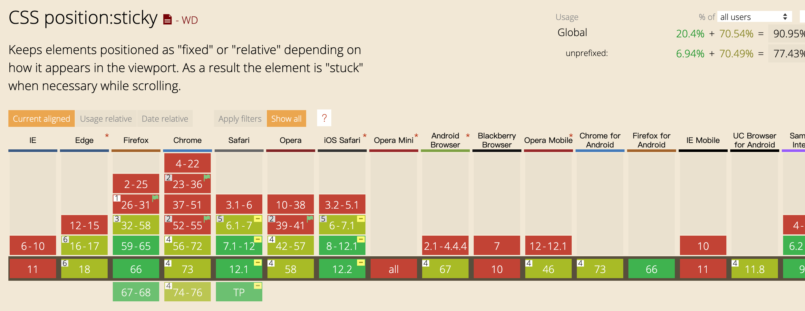
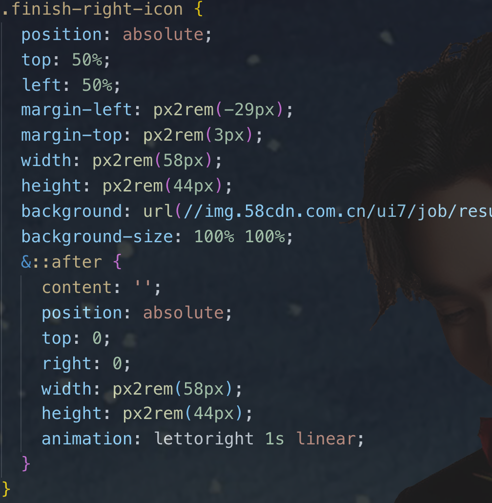
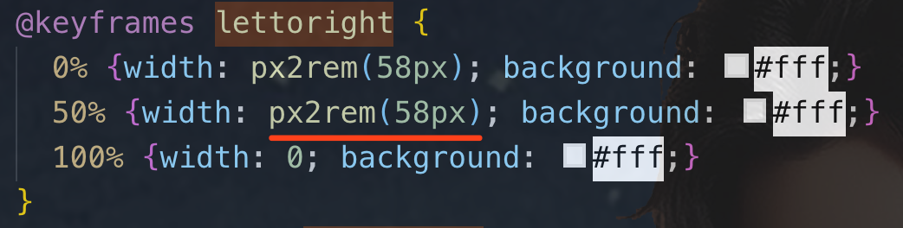
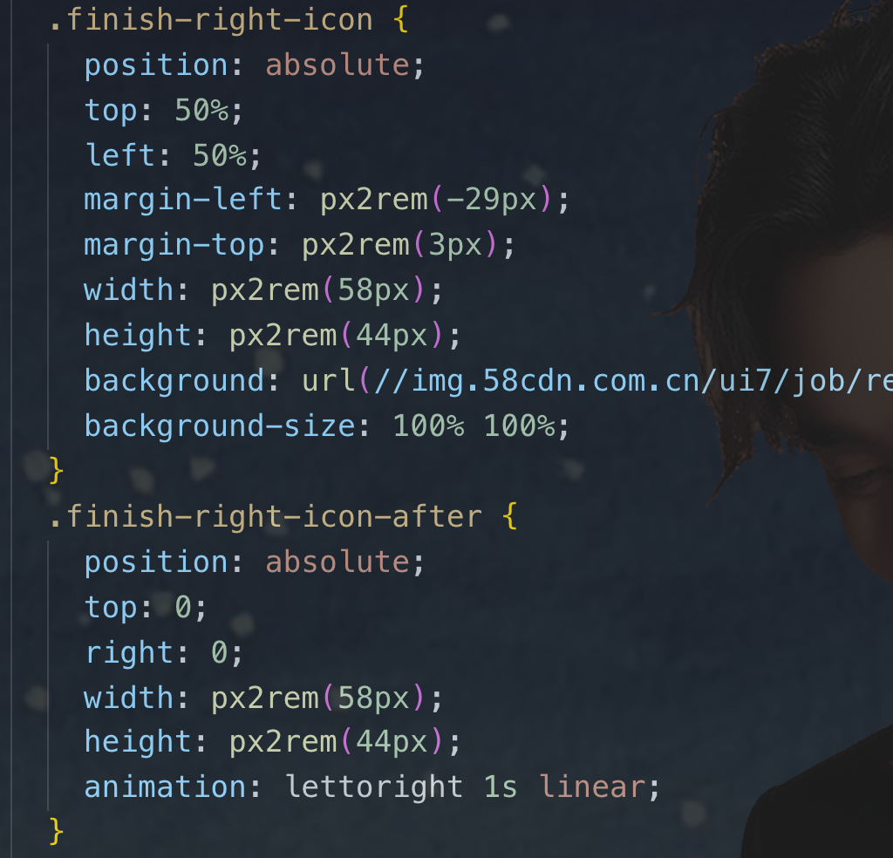
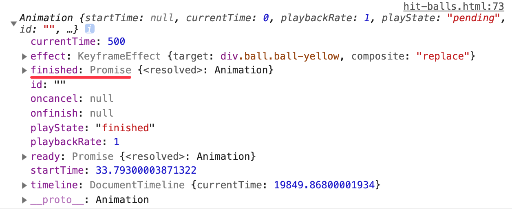

@织语长心 2019-04-26
关于动画的九件小事
第五届 CSS 大会
- 回顾：https://www.yuque.com/cssconf/5th
- 特别想说：**
特别想说“自动 margin”
- 垂直居中实现？那么原理呢？
- 我对 margin 的理解：https://blog.zhiyuchangxin.cn/articles/margin/index.html
我能想到的动画实现方式（12）
1. Css Feather （✔️）
2. Css Transition （✔️）
3. Css Animation （✔️）
4. Js Animation
5. Jq Animate
6. 动画库
7. Web Animation （✔️）
8. Vue Transition
9. Gif 图算吗
10. Canvas
11. Svg
12. Webgl
·Css Feather
一、Css Feather（？）
“属性动画”名称是我杜撰的，我说是动画大家将就听一听吧~
Feather One：****
Feather Two：****
Feather Three：****
·Css Feather
Feather One: Sticky 粘性定位
- 粘性定位可以被认为是相对定位 relative 和固定定位 fixed 的混合
- 必须指定 top right bottom left 四个阈值之一，粘性定位才会生效
- 元素在跨越阈值前为相对定位，之后为固定定位
·Css Feather
- 兼容性
- 适用场景：
- 通讯录定位(MDN DEMO)
- Tab滚动吸顶推荐文章：5 种滚动吸顶实现方式的比较[性能升级版]
- Tip: sticky 在 IOS 系统上兼容良好，但在安卓上暂时还是不要使用了
·Css Feather
Feather Two: scroll-snap 滚动捕捉
- scroll Snap 可以让网页容器滚动停止时自动平滑定位到元素的指定位置（类似幻灯片广告）
- 常用属性（2个就够了）
/* 父容器最重要的属性 */ scroll-snap-type: none | [ x|y|block|inline|both ] [ mandatory|proximity ] /* 子元素最重要的属性 */ scroll-snap-align: [none | start | center | end]{1,2}
·Css Feather
·Css Feather
Feather Three: resize
overflow: !visible
resize: none | horizontal | vertical | both ...
- 常用：禁止 Textarea 拉动
- Amazing: 实现两栏拖动(配合滚动条样式)
·Css Transition
二、Css Transition
·Css Transition
小事二：Transition 仅在样式发生变化时才会运行
- 伪元素之间的切换
:hover、:active（StarDemo） - Js 实现的状态变化
- Tip1：Js 创建 DOM 并直接设置过渡，是监测不到样式变化的Note
- 执行两次 requestAnimationFrame() 向后两帧计算出样式的变化
- getComputedStyle(el)[property] 计算出样式变化
- Tip2：元素被移除、
display:none同样监测不到样式变化 - Tip3：
transition-timing-function默认值为ease
·Css Animation
三、Css Animation
·Css Animation
Css Animation 相关 DEMO
·Css Animation
等等，还有一个 BUG


特殊的缘分：同时使用伪元素+animation中含rem单位+小米4.4手机， CSS 导致 app 崩溃了
·Css Animation

解决方案：
1. 不使用 rem
2. 不使用 animation
3. 不使用 伪元素 （✔️）
相同的遭遇： 原来CSS这样写是会让app崩溃的
- 小事五：避免将动画作用于使用了 rem 的伪元素上
·Js Animation
四、Js Animation
- DEMO：V5 组件库中的按钮动画
- 通过对 rippleJS 的改写，实现了水波纹动效按钮
- 读一读 rippleJS 源码
- 其他实现思路？自定义属性实现
·动画库
五、动画库
- 2019年10个最受欢迎的JavaScript动画库！
- Velocity.js 官网
- Velocity.js 源码（🤩 4000+ 行啊~）
- 80+ 行说一下原理
- velocity-vue?
·Web Animation
六、Web Animation
·Web Animation
Web Animation API（简：WAAPI）

·Web Animation
如何使用 WAAPI
用过 jq 的 animate() 就方便多啦， WAAPI 的基本语法与之类似，
不同的是，WAAPI 是浏览器原生支持的，在性能上有很大的优势。
var element = document.querySelector('.animate-me');
element.animate(keyframes, 1000);
- DOM节点具备全新的 animate 方法
- animate 方法接收两个参数
- 动画模型keyframes：通常是一个对象数组，对应 CSS @keyframes 块的关键帧对象
- 时序模型options：包含动画时序参数
·Web Animation
注意 WAAPI VS CSS 属性上的差异
·Web Animation
如何使用 WAAPI
// 动画模型
var keyframes = [
{ opacity: 0 },
{ opacity: 1 }
];
// 时序模型
var options = {
iterations: Infinity, // 对应 animation-iteration-count: infinite
iterationStart: 0,
delay: 0,
endDelay: 0,
direction: 'alternate',
duration: 700,
fill: 'forwards',
easing: 'ease-out', // 对应 animation-timing-function: ease-out
}
element.animate(keyframes, options);
·Web Animation
WAAPI 的 animate 的返回值
- animate 方法不仅仅为元素提供动画，它还有自己的返回值。
- DEMO：两个小球撞击
·Web Animation
其他常用 WAAPI
play()
pause()
reverse()
finish() // Promise
playbackRate // 控制动画速度（可为负值——反向）
·Vue Transition
七、Vue Transition
小事七：Vue transition 中同时使用过渡和动画，可以选择性结束动画
·性能
八、性能
- css 在实现复杂动画上有局限性，需要 js 实现控制
- css vs js 动画性能的好坏？
- 前面的 demo 中 css 使用不当也会导致 app 崩溃
- 还是看使用者的水平，避免频繁 reflow
- 小事八：尽量只动画 transition 和 opacity，必要时配合 will-change
·不要过度使用动画
小事九：不要过度使用动画
这听着像设计的任务
- 接受一些有意义的动画
- 减少视觉上的冲突
- 可操作交互提醒
- 突出宣传主题
- 纯粹为了美观的动画就放弃吧
总结九件小事
- 可以用 scroll-snap 捕捉滚动实现简单轮播效果
- Transition 仅在样式发生变化时才会运行
- animation-timing-function 只在关键帧之间适用
- animation-timing-function 默认值 ease，自动补间动画
- 避免将动画作用于使用了 rem 的伪元素上
- 现在可以开始使用 Web Animation API 啦
- Vue transition 中同时使用过渡和动画，可以选择性结束动画
- 尽量只动画 transition 和 opacity，必要时配合 will-change
- 不要过度使用动画
参考文献
- Brian Birtles 讲稿10 THINGSI WISH PEOPLE KNEW ABOUT WEB ANIMATION
- Control Page Scroll in CSS Using Scroll Snapping
- Web Animations API
- Using the Web Animations API
- Web Animation API 从入门到上座
- CSS Animations vs Web Animations API
- CSS vs. JS Animation: Which is Faster?
- 借助Web Animations API实现JS keyframes动画
- 动画与性能
- 扇形的几种实现方式